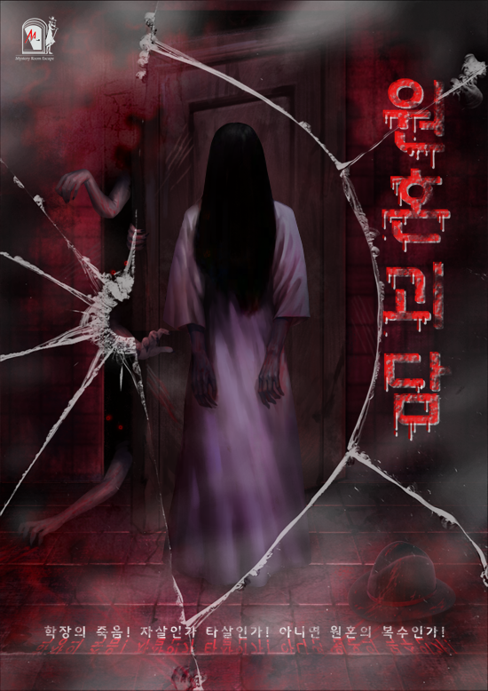

어느날 미스터M에게 남겨진 이상한 내용의 음성메시지...
음성 메시지를 남긴 사람은 미스터M의 동창인 서울예술대학의 학장이다. 다음날 학장은 공포에 질린 채 변사체로 발견된다.
한편, 교내에는 학장의 죽음에 관한 괴상한 소문이 빠른 속도로 퍼져 나가는데...
매일 밤 한밤 중에 잠겨진 학장실에서 전화벨 소리가 울리고,
아무도 없는 방에 전화를 받는 듯한 소리가 들린다는 소문...
미스터M은 이 살인사건을 자세히 조사해 보기로 한다.
Comment: '미스터리룸 이스케이프'는 미국 최신 기술시스템을 활용하여 영화에서만 볼 수 있었던 가상 공간을 오프라인 방탈출 게임에 적용시킨 방탈출 카페입니다.
이런 점이 독특하고 재미있어서 소개드리게 되었습니다.
원혼괴담 테마는 억울함을 가진 귀신에 대한 테마로서, <장화, 홍련> 캐릭터의 원혼 서사와 비교해가며 플레이해보면 재미있으실 거예요!